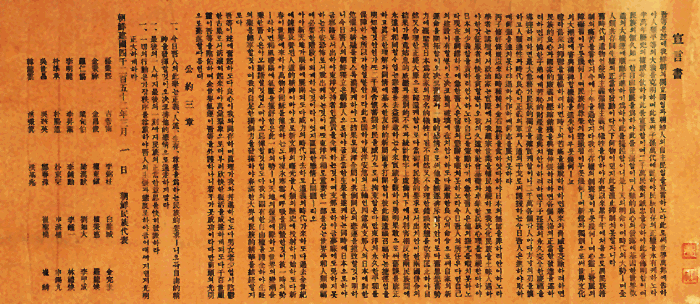

독립운동이란?
우리나라의 주권을 되찾고자 노력한 반외세 항일운동이다.
독립운동의 흐름
일제강점 직후 국내 독립운동은 외형상 전반적으로 부진한 상황이었다. 안악사건, 105인사건 등 일제의 거듭된 탄압에도 애국적인 인사들은 독자적인 비밀결사를 조직하여 국외 독립운동 세력과 연계를 도모하였다. 또한, 사립학교를 중심으로 실시된 민족교육은 애국적인 청년들을 배출하는 기반이었다.
한편 만주,연해주 등지에는 한인촌을 중심으로 독립군기지가 건설되는 등 일제와 독립전쟁을 전개하였다. 대표적인 독립군기지는 삼원포, 북간도 용정촌, 봉밀산 한흥동 등이었다. 이곳에 설립된 무관학교는 독립군 양성 뿐만 아니라 민족교육을 실시하는 등 민족지도자 양성에도 노력하였다. 독립군은 일본군 국경수비대를 공격하거나 국내진공작전을 벌였다.

<관련사진4>
1920년대 이후 국내 독립운동은 사회주의 이념의 수용과 더불어 부분별 민족해방운동을 확산시켰다. 일제의 이른바 문화통치로 식민정책 전환은 제한적이나마 합법적인 활동 공간을 확대하는 계기였다. 민족주의 계열의 입장을 대변한 『동아일보』, 『조선일보』 발간은 실력양성론에 입각한 독립운동을 발전시키는 기반이었다.
실력양성운동의 주요 영역은 민립대학설립운동, 국산품애용운동, 문맹퇴치운동, 농촌계몽운동 등이었다. 산미증식계획은 농민들을 아사 직전 상태로 내몰았다. 더욱이 1920년대 말부터 시작된 세계적인 대공황은 노동자나 농민들 생존권을 위협하였다. 언론사,종교단체를 중심으로 전개된 농촌계몽운동과 1920-30년대 만주로 대량 이주는 이를 반증한다. 일제의 황민화정책에 맞선 조선학운동은 조선어학회사건으로 대대적인 타격을 받았다. 한편 사회주의 이념에 입각한 독립운동은 학생운동을 비롯한 노동운동,농민운동,여성운동,형평운동 등을 확산시키는 요인이었다. 부산부두노동자파업과 원산총파업, 각지에서 전개된 소작쟁의 등은 노동운동과 농민운동 진전을 의미한다. 이는 지식인 사회에 급속하게 보급되는 등 사회운동을 지도하는 이념으로 정립되어 나갔다. 1925년 조직된 조선공산당은 이러한 사회운동을 지도하는 견인차 역할을 수행하였다. 순종 인산일을 계기로 전개된 6, 10만세운동은 사회주의 세력에 의하여 주도되었다. 사회주의 이념 확산은 민족주의 세력과 갈등,대립을 초래하는 등 민족적인 역량을 반감시켰다.
이를 극복한 통일전선체로서 신간회, 근우회가 조직되었다. 일제의 탄압으로 본부는 전국적인 대회조차 개최할 수 없었다. 160여 개에 달하는 신간회 지회는 사실상 지역별 민족해방운동을 주도하는 중심단체로서 기능하였다. 1930년대 초반 신간회 해소론 대두는 이러한 저간의 사정을 그대로 보여준다. 사회주의자들은 공산당재건운동과 혁명적 농민조합운동 등을 통하여 사회운동을 관철시켜 나갔다.
학생운동은 1920년대 이후 국내 민족해방운동 주류로서 부상되었다. 학생들은 동맹휴교를 단행하는 등 식민교육정책에 정면으로 도전하고 나섰다. 광주학생운동 이후 학생운동은 독서회, 사상연구회, 사회경제연구회, 문예회 등을 통하여 일제 패망 직전까지 이어졌다. 그러나 중일전쟁 이후 일제의 민족말살정책은 국내 독립운동 전반의 침체로 이어졌다. 모든 운동단체는 지하로 잠적할 수밖에 없었다. 공화제를 정체로 출범한 대한민국임시정부는 연통제 실시와 외교론에 치중하였다. 연통제는 국내 독립운동 세력과 연결은 물론 군자금을 조달하는 창구로서 활용되었다. 외교론은 파리강화회의에 김규식을 파견하는가 하면 국제회의나 국제연맹으로부터 대한민국을 독립국가로서 승인받으려는 의도였다. 임시정부 독립운동 노선에 반발한 무장세력은 독자적인 독립전쟁론을 전개하였다. 이들은 만주나 연해주에 근거지를 두고 일본군과 혈전을 벌였다. 홍범도의 봉오동전투와 김좌진 청산리대첩은 대표적인 전투였다. 1920년대 중반 이후 정의부, 참의부, 신민부 등으로 분열된 무장세력은 민족유일당운동으로 일시적인 통합운동이 모색되었다. 그러나 일제의 간교한 분할 책동, 독립운동 노선을 둘러싼 갈등 등에 의하여 부분적인 통합에 그치고 말았다.
만주사변과 윤봉길 의거 이후 국제정세 변화와 중국 국민당 정부의 독립운동단체에 대한 지원은 독립전쟁을 활성화시키는 요인이었다. 조선 의용대와 조선 독립동맹 등은 대표적인 무장단체였다. 중일전쟁을 이후 임시정부는 이청천 총사령관으로 하는 광복군을 결성하였다. 광복군은 연합군 일원으로 인도-미얀마전선에 투입되었다. 또한, 미군의 지원을 받아 국내진공을 위한 활동도 마다 하지 않았다. 그런데 일본이 예상외로 쉽게 항복함으로써 이러한 노력은 결실 맺지 못하고 말았다. 한편, 하와이와 멕시코 이민간 한인들도 독립군 양성을 위한 비행학교와 사관학교 등을 운영하는 등 민족교육을 시행하였다. 독립군자금을 위한 독립공채도 발행하였다. 이들은 매달 일정한 세금을 거두어 임시정부에 보내었다. 이는 임시정부를 유지하는데 주요한 재원으로서 활용되었다. 그 밖에 해외 한인들이 거주하는 곳이면 조국독립을 위한 군자금 모집하는 등 독립군 활동을 지원하였다.